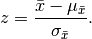
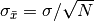
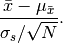

Suppose we have some sample data and we developed a theory for that data. The theory assumes that the mean of the distribution is  . However, we calculated the sample mean
. However, we calculated the sample mean  . The question to ask is to find a measure how well the statistics work.
. The question to ask is to find a measure how well the statistics work.
We calculate

This z-score tells us the deviations of our sample mean from the actual mean, in unit of standard deviations. For example, if , then the deviation of our sample mean from the population mean is of the size one standard deviation.
We do not know the value of standard deviation of the assumed standard deviation . However, the central limit theorem shows that , where  is the standard deviation of the population, and
is the standard deviation of the population, and  is the sample size.
is the sample size.
In principle, we do not really know the population standard deviation . We might be able to approximate this value using the sample standard deviation , if the sample size is large enough (larger than 30).
Finally the expression is

For large sample size (>30), this expression is a z-distribution, which makes the the expression much more easy to understand and meaningful. If the sample size is small (<30), we have a t-distribution. Then we need a t-statistics table to figure out what happens.
Watch the video P-values and significance tests on khanacademy
The basic idea is that if p value is smaller than our preset standard such as 0.05, we say that we can reject our null hypothesis. Otherwise we can not reject the null hypothesis.
© 2018, Lei Ma| GitHub| Statistical Mechanics Notebook | Index | Page Source| changelog| Created with Sphinx